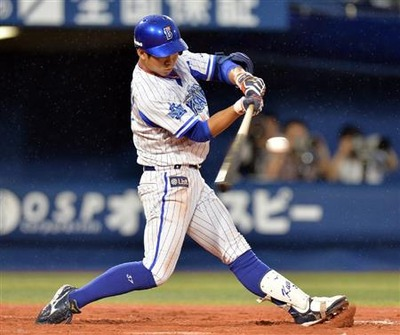

| 年度 | 試合 | 打率 | 本塁打 | 打点 | 盗塁 | 安打 |
|---|---|---|---|---|---|---|
| 2012 | 3 | .333 | 0 | 0 | 0 | 1 |
| 2013 | 5 | .000 | 0 | 0 | 0 | 0 |
| 2014 | 53 | .257 | 1 | 13 | 4 | 37 |
| 2015 | 60 | .184 | 1 | 5 | 1 | 19 |
| 2016 | 133 | .284 | 11 | 49 | 19 | 131 |
| 2017 | 143 | .269 | 13 | 52 | 10 | 161 |
| 2018 | 127 | .261 | 9 | 26 | 17 | 99 |
| 2019 | 72 | .186 | 2 | 7 | 2 | 19 |
| 年度 | 試合 | 打率 | 本塁打 | 打点 | 盗塁 | 安打 |
|---|---|---|---|---|---|---|
| 2009 | 22 | .128 | 1 | 2 | 1 | 5 |
| 2010 | 5 | .000 | 0 | 0 | 0 | 0 |
| 2012 | 80 | .179 | 2 | 11 | 5 | 40 |
| 2013 | 77 | .346 | 16 | 44 | 7 | 88 |
| 2014 | 142 | .263 | 16 | 72 | 39 | 138 |
| 2015 | 134 | .275 | 13 | 66 | 28 | 143 |
| 2016 | 107 | .273 | 18 | 56 | 26 | 108 |
| 2017 | 137 | .243 | 21 | 60 | 21 | 124 |
| 2018 | 41 | .268 | 8 | 18 | 5 | 34 |
| 2019 | 41 | .215 | 5 | 15 | 3 | 20 |
| 年度 | 試合 | 打率 | 本塁打 | 打点 | 盗塁 | 安打 |
|---|---|---|---|---|---|---|
| 2018 | 86 | .251 | 5 | 21 | 15 | 62 |
| 2019 | 123 | .279 | 6 | 35 | 15 | 119 |